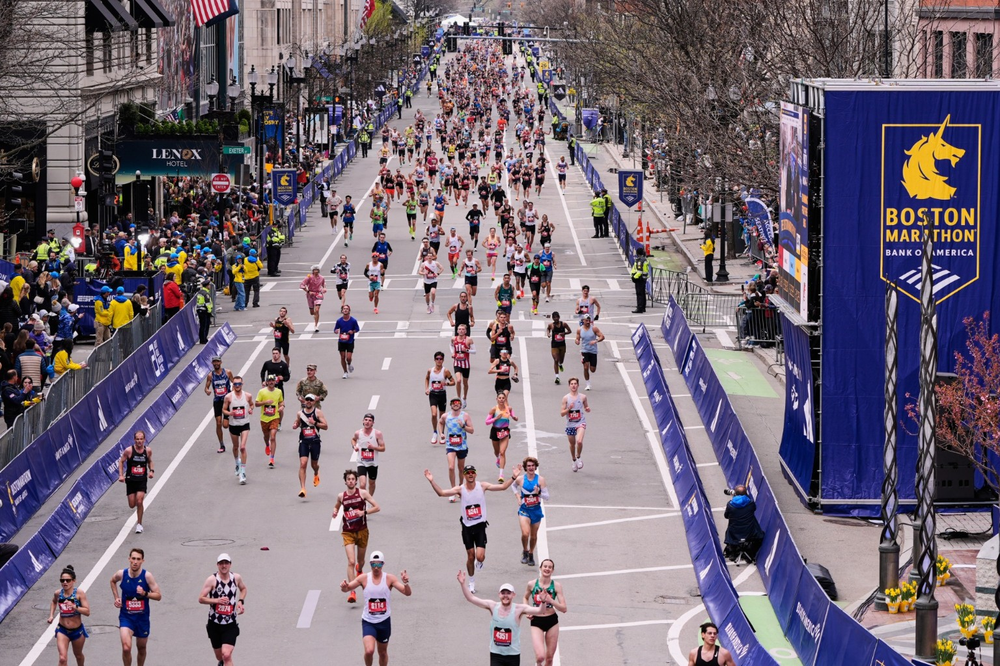
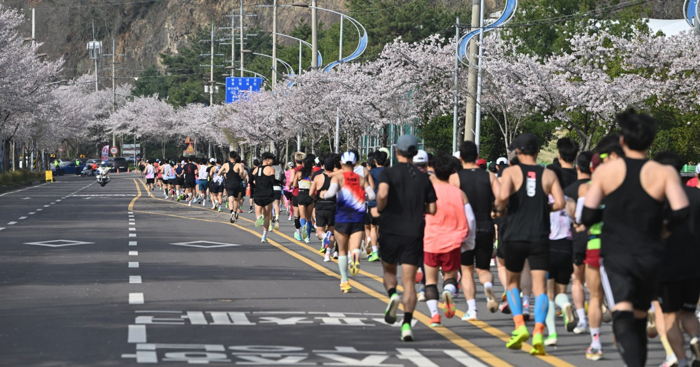
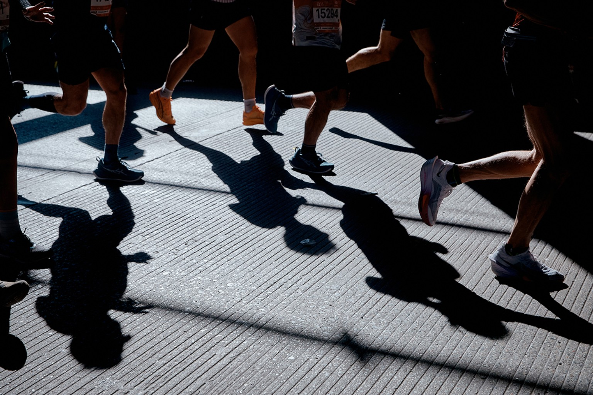
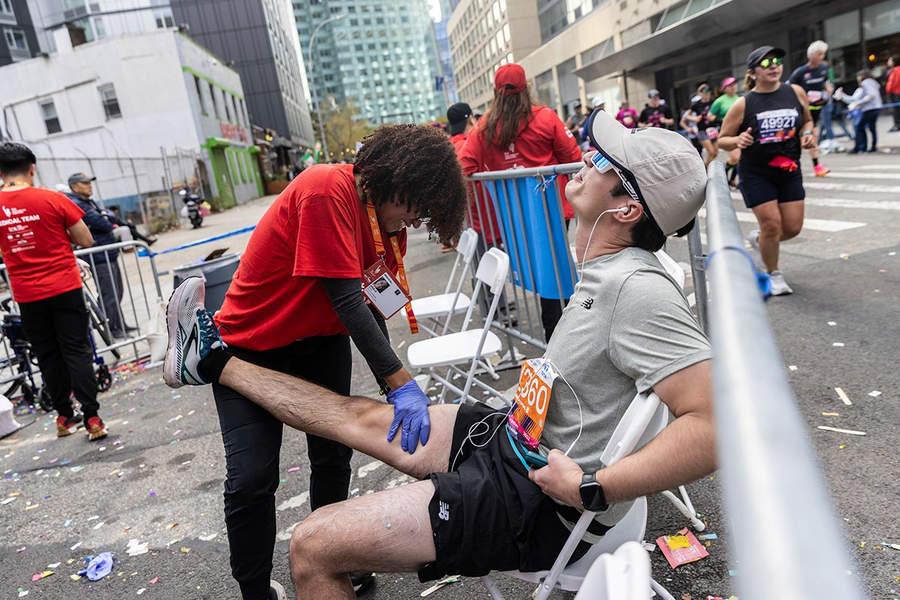
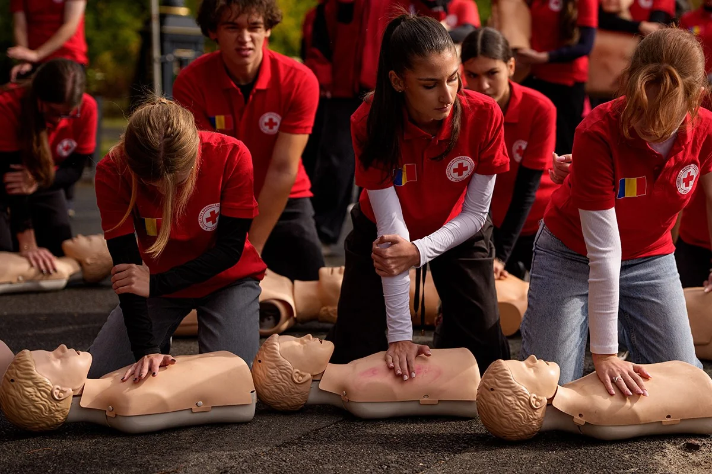
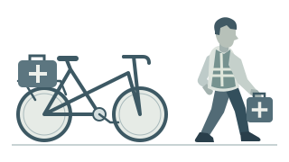
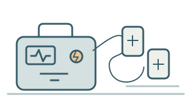
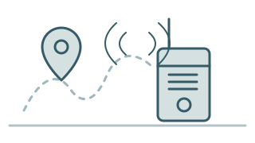
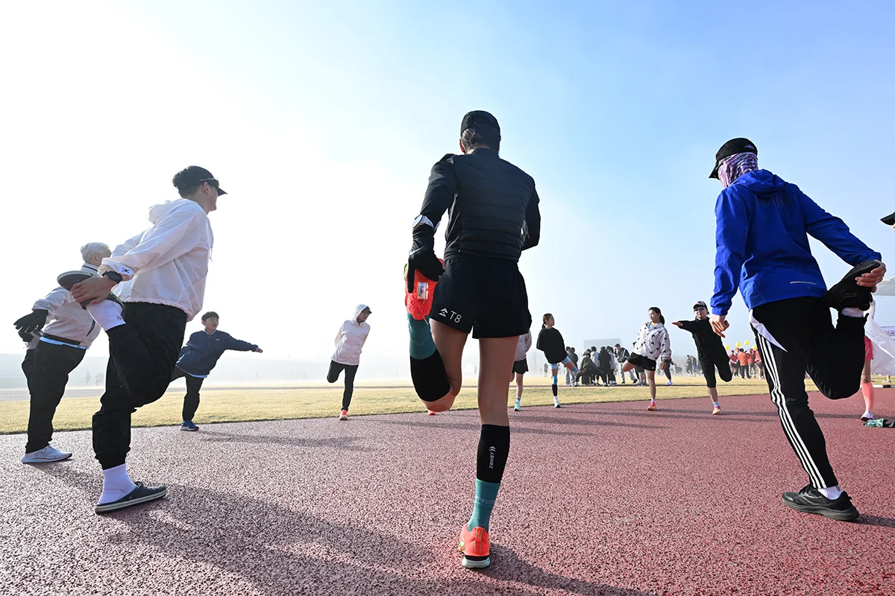
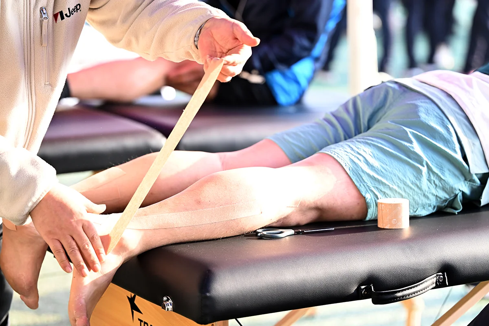

러너의 판단과 대회의 준비
끝까지 달릴 준비
도중에 멈출 대비
"조금만 더"라는 응원보다
"멈춰도 괜찮아"라는 말이 필요할 때.
내 기록으로 마지막 1㎞를 살펴보고,
중단 뒤 의료지원까지 확인합니다.
기획·디렉터 최승훈
뉴시스 바다마라톤. 사진 = 뉴시스 황준선 기자
내 페이스로 시작

01 / 06
10㎞ · 1시간 목표
9㎞까지 달렸습니다.
결승선까지 1㎞ 남았다고 가정해봅니다.
달린 거리거리만 반영한 가상 코스
보스턴마라톤. 사진 = AP/뉴시스

02 / 06
마지막 1㎞를 남겨두고
계획보다
1분 늦었습니다.
- 계획대로라면
- 54분
- 지금은
- 55분
- 현재 지점
- 9㎞
- 경과 시간
- 55분
- 목표 시간
- 1시간
목표 기록을 그대로 두면,
남은 1㎞에 쓸 시간은 1분 줄어듭니다.
나주영산강마라톤. 사진 = 뉴시스 이영주 기자

03 / 06
그 1분을
만회하려면.
처음 목표대로 도착하려면
처음 계획보다 1분 빠르게
두 페이스를 같은 비율로 빠르게 재생합니다.
기록을 쫓든, 목표를 조정하든,
달리는 동안에는 늘 몸 상태를 살펴야 합니다.
뉴욕마라톤 참가자들의 발걸음. 사진 = AP/뉴시스

04 / 06
결승선이 가까워도,몸의 신호부터.
달리다가 이런 증상이 나타나면
즉시 멈추고 의료진에게 도움을 요청합니다.
뉴욕마라톤 현장 지원. 사진 = AP/뉴시스
DNF
05 / 06 · 응급 대응
도움이 닿기까지.

손으로 가슴을 반복해 누르는 처치
두 손을 포개 가슴뼈를 반복해 눌러 혈액 순환을 돕습니다.
약 48초는 쓰러진 순간부터 가슴압박을 시작하기까지의 시간입니다.
약 절반의 사례에서 아래 시간 안에 처치가 이뤄졌습니다.
- 목격된 28건
- 약48초
- 충격 시행 23건
- 2분 11초
두 막대는 모두 쓰러진 순간(0초)부터 흐릅니다.
기다려도 되는 시간이 아닙니다.심정지가 의심되면 즉시 대응합니다.
두 시간의 근거
일본 251개 대회(2005~2017년)를 살펴본 연구입니다. 가슴압박 28건 중 절반 정도는 약 48초 안에,
AED 충격 23건 중 절반 정도는 2분 11초 안에 이뤄졌습니다. 한 사람의 구조 과정이 아닙니다.
출처: 뉴잉글랜드 의학저널(2018), 표 1
국내 대회의 평균이 아니며, 처치의 지속 시간이나 재충격 간격도 아닙니다.
06 / 06 · 복귀와 다음 달리기
멈춘 뒤에도,
지원이 이어지도록.
장비를 갖춘 구조팀이 연락을 받고 현장으로 갑니다.

자전거·도보 구조팀대회 코스를 돌며
응급환자에게 이동
AED·구급장비이동하는 구조팀이
응급처치 장비를 휴대
위치를 공유하는 연락 체계발생 위치를 전달해
가까운 대응 인력을 연결- 뉴시스TV · 5분 정독자전거 탄 AED, 4단계 깃발…
세계 마라톤은 러너를 이렇게 지킨다영상 보기 ↗
앞 장의 일본 연구(251개 대회)에 나온 대응 체계의 개념도 · 실제 장비 모델·배치도와 다릅니다.
다음 달리기 전 확인할 것

- 병력·증상
- 심장질환이나 운동 중 가슴 통증·실신 경험이 있다면 참가 전 의사와 상담합니다.
- 수면·피로
- 잠이 부족하거나 피로가 남았다면 목표와 참가 여부를 다시 판단합니다.
- 기온·습도
- 달리는 시간대의 날씨를 확인하고 더위에는 강도를 낮춥니다.
- 급수·지원
- 급수·의료지원 위치, 대회 연락처와 회수차 안내를 확인합니다.
중단·완주 뒤 의료지원과 복귀

- 증상으로 중단
- 의료진·운영요원에게 위치와 참가번호를 알립니다. 상태가 심하거나 위급하면 119에 도움을 요청합니다.
- 이상 없이 완주
- 서서히 속도를 낮춰 정리운동을 합니다. 수분은 갈증과 환경을 고려해 보충하고, 억지로 많이 마시지 않습니다.
- 복귀·다음 훈련
- 의료진·운영진 안내에 따라 복귀합니다. 통증이나 평소와 다른 상태가 남으면 훈련보다 진료가 먼저입니다.
반응이 없고 정상적으로 숨 쉬지 않는 사람이 있다면
주변에 119 신고와 AED 확보를 요청하고 즉시 가슴압박을 시작합니다. 119 상담요원과 AED 음성 안내에 따릅니다.